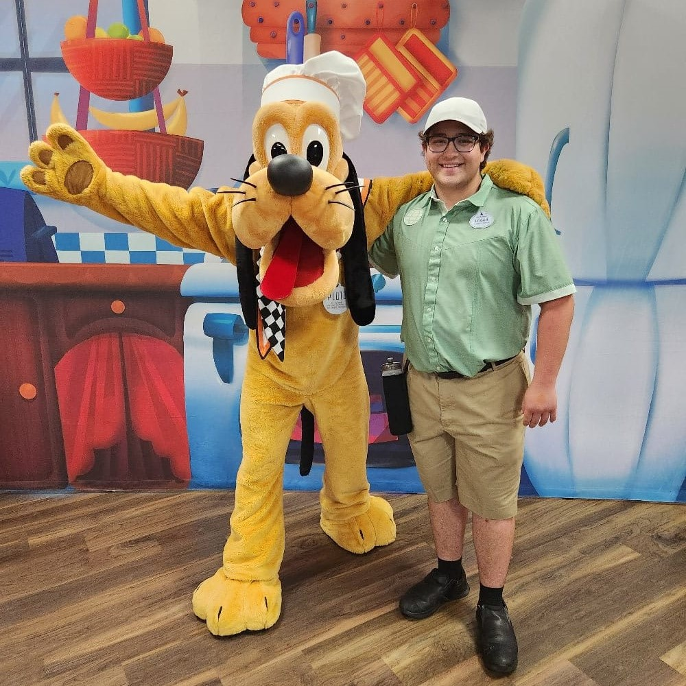

Growing up, I was fortunate to spend much of my childhood at
Walt Disney World. Those countless trips immersed me in a
world where every detail was carefully designed to create a
sense of wonder. While most guests were content to
experience the Disney Magic, I was always looking for the
mechanisms behind it. Looking up when others looked down,
studying ride tracks and show systems, I discovered that
understanding how things worked did not diminish the magic,
but deepened it.